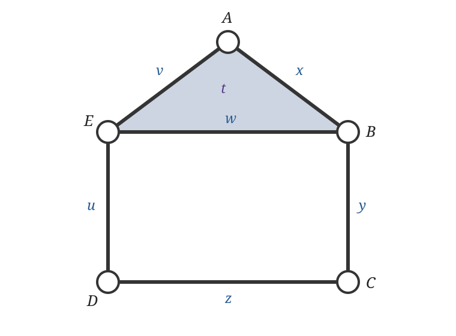

Week 2: Simplicial complexes and homology
Edelsbrunner and Harer, Chapters III.1 and IV.1–IV.2, provide the simplicial complex, homology and matrix reduction spine. Postol, Sections 3.3–3.4 and 4.1, provide a slower route through fields, vector spaces, simplicial homology and induced maps.
Guiding definition for Weeks 1–4. For a filtration \(K_a\subseteq K_b\) when \(a\leq b\), persistent homology is the module \[a\mapsto H_p(K_a;\mathbb F),\qquad (a\leq b)\mapsto(\iota_{a,b})_*.\]
1 · Representation
Scientific object, observations and the topological question.
2 · Homology
\(K_a\) and \(H_p(K_a;\mathbb F)\). This week treats the complex as already chosen and asks what homology computes from it. A simplicial complex becomes a finite bookkeeping device whose chains and boundary maps turn qualitative shape into linear algebra.
3 · Filtration
\(K_a\subseteq K_b\) across scale.
4 · Memory
Induced maps, module and barcode.
Learning goals
By the end of this week, you should be able to:
- look at a small example and distinguish the abstract simplicial complex, a geometric drawing of it and its 1-skeleton;
- explain what the chain space \(C_p(K;\mathbb F_2)\) contains and how a chosen simplex ordering turns chains and boundary maps into columns and matrices;
- read a small boundary matrix, explain what its entries record and use \(\partial_{p-1}\partial_p=0\) as a meaningful consistency check;
- explain cycles, boundaries and homology as the steps that separate closed chains from those already filled in; and
- predict how adding an edge, triangle or tetrahedron can change the Betti numbers, then confirm that prediction with a small calculation.
Simplices: the building blocks
A simplex is one building block. Its dimension is one less than its number of vertices:
| Dimension | Name | Abstract notation | What is actually present? |
|---|---|---|---|
| \(0\) | vertex | \(\{A\}\) | one labelled vertex |
| \(1\) | edge | \(\{A,B\}\) or \(AB\) | the edge and its two endpoint vertices |
| \(2\) | triangle | \(\{A,B,E\}\) or \([A,B,E]\) | a filled triangular face, its three edges and its vertices |
| \(3\) | tetrahedron | \(\{A,B,C,D\}\) | a filled solid tetrahedron, its four triangular faces, edges and vertices |
| \(p\) | \(p\)-simplex | \(\{v_0,\ldots,v_p\}\) | a \(p\)-dimensional block with \(p+1\) vertices and all its faces |
The word filled matters. Three vertices joined by three edges form an outline triangle, but they do not form a 2-simplex unless the triangular face is also included.
In a drawing, a vertex is shown as a point. More precisely, the vertex is the combinatorial item, such as the label \(A\), while the plotted point is a chosen geometric location used to realise it. Moving that plotted point does not change the abstract complex provided the same incidences are retained.
A geometric \(p\)-simplex is the convex hull of \(p+1\) affinely independent points. An abstract \(p\)-simplex is simply a set of \(p+1\) vertex labels. We use abstract simplices because the calculation needs to know which vertices belong to which edges and faces; coordinates are optional.
Running example: read the house as a collection of simplices

The house contains:
- five 0-simplices: \(A,B,C,D,E\);
- six 1-simplices: \(x=AB\), \(y=BC\), \(z=CD\), \(u=DE\), \(v=EA\) and \(w=EB\);
- one 2-simplex: the filled roof \(t=[A,B,E]\); and
- no simplices in dimension 3 or above.
The square room is bounded by four edges, but its interior is not a simplex. The roof is different: its shaded triangular interior is explicitly part of the complex.
From simplices to a simplicial complex
A simplicial complex \(K\) is a collection of simplices with one consistency rule called downward closure:
\[ \sigma\in K,\quad \varnothing\ne\tau\subseteq\sigma \quad\Longrightarrow\quad \tau\in K. \]
In ordinary language: if a simplex is present, every face of that simplex must also be present. The rule lets us move down one dimension without leaving the collection.
Example and counterexample: what downward closure requires
The house satisfies the rule. Because the roof \(t=[A,B,E]\) is included, its three edges \(AB\), \(BE\) and \(EA\) must be included. Because those edges are included, their endpoint vertices \(A\), \(B\) and \(E\) must also be included.
A football-team hyperedge need not satisfy the rule. Suppose a hypergraph contains the group
\[ T=\{A,B,C,D\} \]
to record that four players belong to the same team. The data may not assert that every pair socialises or interacts separately; perhaps \(A\) and \(C\) never spend time together. A hypergraph may therefore contain the four-person hyperedge \(T\) without containing all six pairwise edges.
That collection is a valid hypergraph but not a simplicial complex. If \(T\) were included as a 3-simplex, downward closure would require every three-player face, every pairwise edge and every player vertex. Converting a team hyperedge into a simplex therefore adds relational claims that the original data may not support.
◇ Object check. The complex is \(K\), the whole downward-closed collection. A simplex such as \(t=[A,B,E]\) is one member of \(K\). A drawing is a geometric realisation of that combinatorial information, not the definition of \(K\).
† Qualification. Authors differ on whether the empty simplex is included. Here every displayed simplex is non-empty, vertices are 0-simplices and the ordinary chain complex begins at \(C_0\).
Chains: selecting simplices algebraically
If basis, kernel, image, rank or quotient are unfamiliar, read the pre-Week 2 algebra survival guide. Its coefficient-field section explains the arithmetic over \(\mathbb F_2\) used below.
For each dimension \(p\), the chain space \(C_p(K;\mathbb F_2)\) has the \(p\)-simplices as a basis. For the house,
\[ C_2=\operatorname{span}\{t\},\qquad C_1=\operatorname{span}\{x,y,z,u,v,w\},\qquad C_0=\operatorname{span}\{A,B,C,D,E\}. \]
A 1-chain is any selection of house edges. For example,
\[ y+u \]
is a perfectly valid chain even though the two edges are disconnected. A chain is an algebraic selection, not necessarily a path or loop. Two more useful 1-chains are
\[ r=x+v+w \quad\text{(the roof outline)}, \qquad q=y+z+u+w \quad\text{(the room outline)}. \]
Over \(\mathbb F_2\), a coefficient is either 0 or 1: omit a simplex or include it. Adding chains uses symmetric difference because an edge selected twice cancels, \(1+1=0\).
Boundary maps: record the faces of a chain
The boundary map lowers dimension by one:
\[ \partial_p:C_p\longrightarrow C_{p-1}. \]
For an edge, the boundary is its two endpoints. In the house,
\[ \begin{aligned} \partial_1x&=A+B,& \partial_1y&=B+C,& \partial_1z&=C+D,\\ \partial_1u&=D+E,& \partial_1v&=E+A,& \partial_1w&=E+B. \end{aligned} \]
For the filled roof, the boundary is its three surrounding edges:
\[ \partial_2t=x+v+w=r. \]
Linearity means that the boundary of a chain is the sum of the boundaries of its selected simplices. For the room outline,
\[ \begin{aligned} \partial_1q &=\partial_1(y+z+u+w)\\ &=(B+C)+(C+D)+(D+E)+(E+B)=0. \end{aligned} \]
Every vertex occurs twice and cancels. The same calculation gives \(\partial_1r=0\). Moreover,
\[ \partial_1\partial_2t=\partial_1r=0. \]
This is the concrete meaning of \(\partial_{p-1}\partial_p=0\): the boundary of a boundary has no boundary left over.
With vertex rows \((A,B,C,D,E)\) and edge columns \((x,y,z,u,v,w)\), the same information is recorded in the matrix
\[ [\partial_1]= \begin{array}{c|cccccc} &x&y&z&u&v&w\\\hline A&1&0&0&0&1&0\\ B&1&1&0&0&0&1\\ C&0&1&1&0&0&0\\ D&0&0&1&1&0&0\\ E&0&0&0&1&1&1 \end{array}. \]
For example, the column labelled \(y\) contains 1 in rows \(B\) and \(C\) because \(\partial_1y=B+C\). A matrix is therefore not an unexplained array: each column is the boundary of the basis simplex named above it.
Together the house maps form
\[ 0\longrightarrow C_2 \xrightarrow{\partial_2}C_1 \xrightarrow{\partial_1}C_0 \longrightarrow0. \]
Cycles, boundaries and homology in the house
A cycle is a chain with zero boundary:
\[Z_1=\ker\partial_1.\]
Both \(r\) and \(q\) are cycles. Row reduction gives \(\operatorname{rank}\partial_1=4\), so rank-nullity gives
\[ \dim Z_1=6-4=2, \qquad Z_1=\operatorname{span}\{r,q\}. \]
A boundary in dimension 1 is the boundary of an available 2-chain:
\[ B_1=\operatorname{im}\partial_2=\operatorname{span}\{r\}. \]
The roof outline \(r\) is therefore both a cycle and a boundary. The room outline \(q\) is a cycle but not a boundary because no filled 2-dimensional region has the room as its boundary.
Homology keeps cycles while identifying boundaries with zero:
\[ H_1=Z_1/B_1 =\operatorname{span}\{[q]\}\cong\mathbb F_2, \qquad \beta_1=1. \]
The quotient is visible in this example. The outer house outline is
\[c=x+y+z+u+v=r+q.\]
Because \(c\) and \(q\) differ by the boundary \(r\), homology treats them as two representatives of the same class:
\[[c]=[q].\]
It has deliberately forgotten whether the representative travels around the roof as well as the room; the filled roof makes that difference removable.
The house is connected, so \(\beta_0=1\). Also \(\partial_2t=r\ne0\), so the 2-simplex is not a 2-cycle and \(\beta_2=0\). Hence
\[ (\beta_0,\beta_1,\beta_2)=(1,1,0). \]
Rank-nullity gives the general computational formula
\[ \beta_p=\dim C_p-\operatorname{rank}\partial_p -\operatorname{rank}\partial_{p+1}. \]
For the house, the Euler check is
\[ \chi=5-6+1=0=1-1+0 =\beta_0-\beta_1+\beta_2. \]
Homology keeps closed chains and removes those already explained as the boundary of something one dimension higher.
Examples
Use the lecture walkthrough while following the outline triangle, filled triangle, square loop and hollow tetrahedron below. The participant practical asks you to predict their cycles and boundaries, read the corresponding matrices, and explain the resulting Betti numbers.
Worked example: outline and filled triangle
Use an outline triangle and a filled triangle. In the outline triangle, the sum of the three edges is a cycle with zero boundary. It is not the boundary of any two-chain because no triangular face is present, so it represents a nonzero class in \(H_1\). In the filled triangle, the same edge cycle is now \(\partial_2(\text{triangle})\), so its homology class is zero.

The field and chain-addition explanation works this same triangle over \(\mathbb F_2\) and contrasts its parity cancellation with the signed calculation over \(\mathbb Q\) or \(\mathbb R\).
The two triangles have the same 1-skeleton. Adding the face leaves \(C_0\), \(C_1\) and \(\partial_1\) unchanged, but creates \(C_2\) and a new map \(\partial_2\). The cycle does not disappear as a chain. It becomes a boundary, so its class disappears in the quotient \(Z_1/B_1\).
Dynamical systems translation. Suppose three oscillators or agents have pairwise interactions. Their interaction graph contains the three edges of an outline triangle. Filling that triangle with a 2-simplex makes an additional modelling assertion: the three pairwise relations belong to one coherent three-way relation. The observations at the vertices and edges have not changed, but the chosen representation has, and the loop class is consequently filled. Whether that higher-order relation is scientifically justified must come from the coupling mechanism or construction rule, not from the triangular drawing alone.
Further examples: square loop and hollow tetrahedron
Use a square loop as the simplest visible \(H_1\) class and a hollow tetrahedron as a first \(H_2\) example. Ask explicitly which chains are cycles, which cycles are boundaries, and which distinctions survive in the quotient.
The notebooks reproduce this algebra directly over \(\mathbb F_2\), following the matrix viewpoint in Edelsbrunner and Harer (Edelsbrunner and Harer 2010, IV) and the traditional simplicial-homology route in Postol (Postol 2024, sec. 4.1).
For \(H_1(S^1)\), the winding number gives useful intuition. Loops around a circle are classified by how many times they wind around the hole. Over \(\mathbb{Z}\), this gives \(H_1(S^1)\cong \mathbb{Z}\). For the computational pipeline, we usually work over a field such as \(\mathbb{F}_2\), but the winding-number story helps explain why homology classes are algebraic representatives of holes rather than the holes themselves.
Graph versus clique complex
Worked example: the same triangle graph, with and without clique filling
An interaction graph may be treated as a one-dimensional simplicial complex: it contains vertices and edges but no two-dimensional faces. A triangle of three edges is then a cycle and, because no face is available, it represents a nonzero \(H_1\) class.
The clique complex of a graph adds a simplex for every complete subgraph. The same three mutually adjacent vertices therefore generate a triangular 2-simplex. Its boundary is the three-edge cycle, so that cycle represents zero in \(H_1\).
What changed? Not the vertices or pairwise observations. Clique filling adds the modelling assertion that mutual pairwise interaction is evidence of one coherent higher-order unit. This may be appropriate for a coordination network and inappropriate when the graph cycles themselves are the scientific objects of interest.